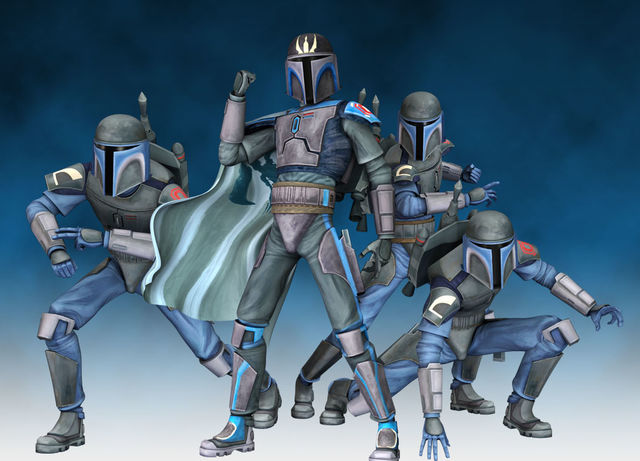

About Us
Death Watch is the second oldest guild in Sigm∆ Alliance. Death Watch is led by Nani75 and his strong group of Officers consisting of: Blazer JL, Buell Gator, Fonz, H2H, Harambe Lives On, Jehurty, Nerf Herder, Rinqual Shadowsmuggler, Shocker 587 & The UnderDark.
Death Watch has a reset of 3:30 PM Eastern Daylight / 19:30h GMT and runs US friendly raid times.
Requirements
We are are a hStr focused guild that is building towards high scoring Territory Battles. New recruits must have at least 2.0 M GP to be seriously considered. These Toons are of interest: hStr P1 JTR Team, Revan, 5* Hoth Twins, CLS, 5* Veers, 5* Starck, 7* Snowtrooper, & 7* Vader. Territory War Sign Up is mandatory. All Guild Event participation is tracked, and everyone should be actively participating. We require 600 tickets per day to allow the guild to launch the max amount of raids.
Here is a Living Rules Document for Death Watch
Swgoh.gg Profiles are Mandatory. We collect data of our players and their growth to better focus our goals and aim our success.
Discord is mandatory so we can communicate; Check discord each time you launch the game so that you don't miss out on announcements affecting you.
Raid Info
Heroic Rancor Raid:
- Raid Launch Is at 8:00 PM Eastern Daylight / 01:00 GMT (Guild Reset plus 5.5 hours)
- Damage may be posted at 8:10 PM Eastern Daylight / 01:10h GMT.
- If you can solo a phase, please wait until 8:20PM Eastern Daylight/01:20 GMT to post damage
hAAT Raid:
- Raid Launch is at 8:30 pm Eastern / 1:30 GMT.
- After 24 hours, 8:30 pm Eastern / 1:30 GMT, we will call ZERG and you can post damage in the raid.
hStr:
- hStr's will be launched once tickets allow so. Each hStr is Free For All (FFA) until the clear time is less than twelve (12) hours.
- If you are unsure of any raid rule, please consult any officer.
Guild Rules
Discord and Conduct
- Check Discord Daily
- Keep content PG as we have young players among us (except in specific non pg areas)
- Report Bugs or Errors in the server
- Don't Troll and Be Respectful and Polite Towards others
- Post in #leave_of_absence if you’ll be away from the game and unable to complete tickets
Infractions and Discipline
The following list is the punishment for infractions. Infractions include, but are not limited to, posting early in raids, going over 24 GW nodes, and not achieving 600 daily tickets
- Warning and start of Officer Dialogue with Member
- Sit out of next HPIT Raid
- Sit out of next HAAT Raid
- Sit out of next hStr Raid
- Move from DW to more fitting Sigma Guild
Members will be notified upon receiving an infraction. Failing to follow an infraction will result in another infraction.
Death Watch Ideals
Death Watch is a part of the Sigma Guild Cluster. Sigma as a core philosophy supports the concepts of movement & change. A starting point within Sigma as Death Watch does not always end at Death Watch. If members perform beyond expectations they can move to more competitive Sections of Sigma. Likewise, repeated low performance without proper communication will lead to placement to a less stringent portion of Sigma to prevent game burn out. The advantage of the Sigma Guild Cluster is being a member of not just your immediate ingame guild but of being a member of a larger & supportive super guild.
With that being said, Death Watch itself focuses on personal growth through Strengthening Accounts, Game Knowledge, and surpassing Personal Goals.